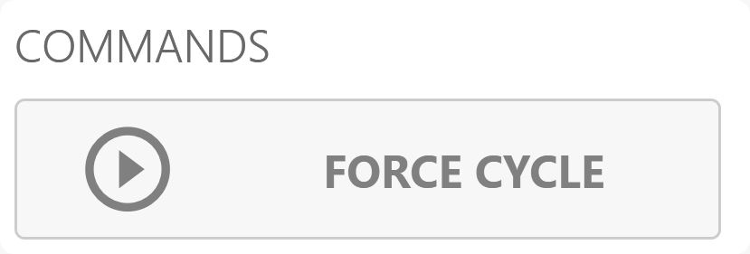
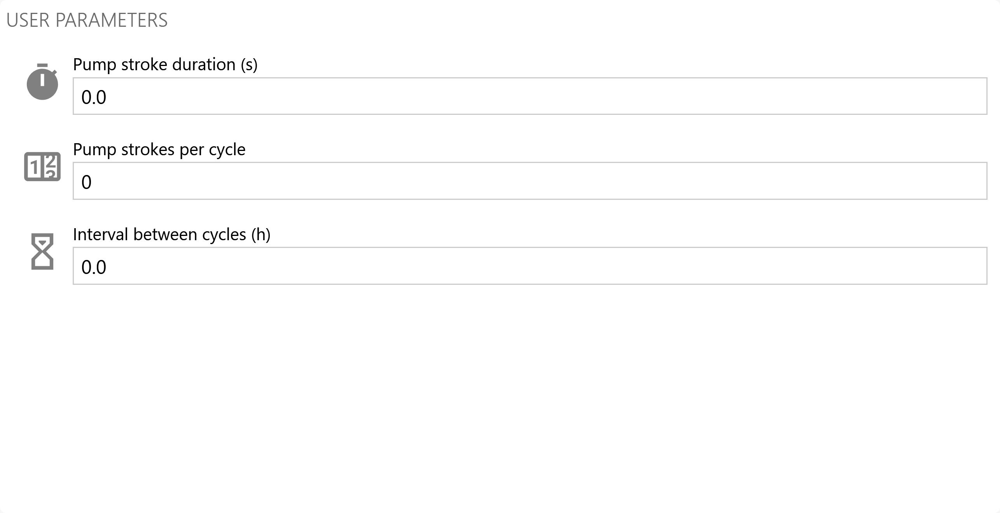
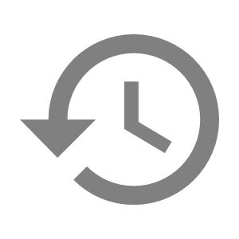

This section allows to modify lubrication parameters, request a greasing cycle and read lubrication statistics.

Commands
This section collects commands to force the machine to do operations described below.

 | Force cycle |
User parameters
In the top-left corner are collected basic parameters that affect the lubrication operations.

 | Pump stroke duration |
 | Pump strokes per cycle |
Interval between cycles |
Technician parameters
In the bottom-left corner are collected advanced parameters that affect how the cycle operates.

 | Forced cycle time |
| Changes to validate the cycle |
Grease blockage check delay | |
 | Continuous alarm lock time |
Command and statistics
In this section are displayed statistics of the lubrication. In order to update the, refresh the page.

| Grease sensor changes |
Consecutive failed cycles | |
 | Time since last lubrication |
 | Pump strokes since startup |
Total pump strokes | |
Pump strokes since reset |